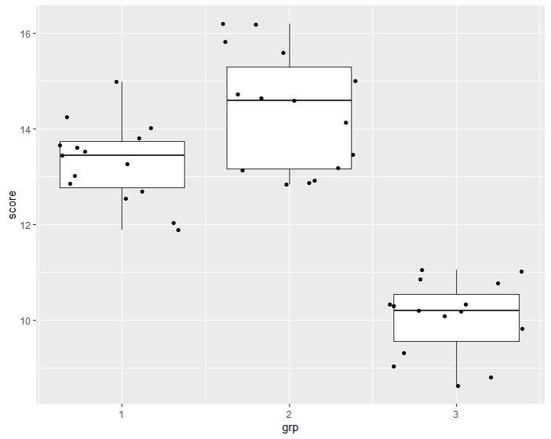

说明：
- 平方和（sum of squares, SS)是我们常用的一种简称，指的就是类似∑(...)2这样的形式
- 对于一个3组比较，每组样本量各自为n1,n2,n3的数据，∑i=1k∑j=ini(xij−xˉ)2指的是x11,x12,...x1n1各项减xˉ差的平方的和，加上x21,x22,...x2n2各项减xˉ差的平方的和，加上...直到xk1,xk2,...xknk各项减xˉ差的平方的和。
- 完全随机分组设计的方差分析
SS总=∑i=1k∑j=ini(xij−xˉ)2
=∑i=1k∑j=ini(xij−xiˉ+xiˉ−xˉ)2
=∑∑((xij−xiˉ)2+2(xij−xiˉ)(xiˉ−xˉ)+(xiˉ−xˉ)2)
=∑∑(xij−xiˉ)2+∑∑2(xij−xiˉ)(xiˉ−xˉ)+∑∑(xiˉ−xˉ)2
对于任何一组(i=1,2,...k)，都有该组所有项减该组均值的差的和为0(∑(x−xˉ)=0, 详见公式推导，平均值的性质)，所以上面三项中的第二项为0，于是有
SS总=∑∑(xij−xiˉ)2+∑∑(xiˉ−xˉ)2
- 分解的意义
在讲方差分解以前，我们考虑这样一个问题，假如现在有一个变量x，一个变量y，现在我们用一个模型y^=β1x+β0来根据x对y进行估计，那么这个模型到底好不好呢？我们尝试使用各个预测值y^与真实值y之间的距离的平方的和（∑(y−y^)2）来作为评判标准，当这个ss最小的时候，我们认为模型是最好的。这种办法也就是线性回归中常用的最小二乘法。
简单来说，最小二乘法就是：
- 利用一个模型根据自变量x的值x1,x2,...xn计算因变量y的预测值y1^,y2^,...,yn^
- 计算SS=∑(yi−yi^)2
- 通过优化模型的参数让SS最小
回到方差分析，考虑这样一个简单的例子：3组志愿者，n1=n2=n3=15，三组数据箱式图如下图所示

数据集包括三个变量：id，1至45的一个记录编号；grp：1到3，提供分组信息；score：提供分数信息。现在让我们先考虑仅仅用id作为自变量，score作为因变量，用id去预测score。当我们以id作为x轴，score作为y轴的时候，可以看到数值的分布是没有什么规律的：

于是模型没有任何可用的自变量，现在预测模型为y^=β0, 而SS=∑(yi−β0)2，从平均值的性质可以知道当β0=yˉ=45∑i=13∑j=1niyij的时候SS取极小值。这个时候的SS:
SS=∑(y−yˉ)2
就是不考虑任何自变量的时候得到的SS极小值，也就是在方差分析中所提到的SS总
现在当我们加入分组grp这个自变量以后，现在单纯看grp=1的第一组，这组的15个数据，要令SS=∑(yi−yi^)2最小，也只能令yi^=∑j=1n1yj/n1，也就是第一组的算数平均值y1ˉ, 此时最小的SS就是∑(y−y1ˉ)2; 同理，对于第二组和第三组，其对应的最佳的SS分别是∑(y−y2ˉ)2和∑(y−y3ˉ)2，将三组的SS相加有：
SS组内=∑i=1k∑j=1ni(y−yiˉ)2
这个也就是方差分解中等号右边的第一项
那么方差分解中，等式右边的第二项，SS组间=∑∑(yiˉ−yˉ)2就是两者的差，可以理解为引入分组grp这个自变量以后，将原先没有任何可参考信息时的SS总，缩小到引入分组grp自变量后的SS组内，所减少的误差

在方差分析中，对于任何一个数据点（图中的黑点），数据点到全体数据均值(yˉ)之间距离（图中绿线）距离平方和就是SS总, 数据点到组内均值（yiˉ, 图中红点）的距离（图中蓝线）的平方的和就是SS组内。而各组均值yiˉ到全体数据均值yˉ之间距离（图中红色线）的平方和则是SS组间。在引入分组以后，原先对y的预测模型从只能使用一个单一的均值yˉ变成了根据不同组使用对应的均值yiˉ，于是表示误差的SS从SS总减少到了SS组内，减少的部分SS组间就是引入的分组变量grp所产生的贡献。而且我们还可以用：
R2=SS总SS组间这个比值来说明引入的自变量可以多大程度上解释变异。试想一下，如果SS组间=SS总，那么SS组内=0，也就是说在引入grp自变量以后，组内已经不存在任何变异了，grp可以完全解释score的任何变动。而与之相反的，如果SS组间=0，那么$SS组内=SS总，也就是说引入的grp变量以后，不能解释任何总体的变异，于是grp这个变量的引入就没有意义。
总而言之，可以这样理解：
- SS总表示的是没有任何自变量的时候，因变量内含的变异；
- SS组间表示的是通过引入自变量，所减少的变异；
- SS组内表示的是引入自变量后，仍旧无法消除的变异。
方差分析之所以最后可以落实到F分布，其原因就是当H0成立的时候，组内方差和组间方差是对总体方差的两种估计。
三组相比较的方差分析的H0虽然写作μ1=μ2=μ3，但是实际上指的是三组样本实际上是来自同一个总体。现在为了方便推导，我们限制三组的样本量相同，均为n，参考2独立样本均值比较的t检验中，满足方差齐性假定后的sc公式，从三组的SS组内估算总体方差的公式为：
s组内途径2=∑ni−k∑ni−1∑(x−xiˉ)2×(ni−1)=∑ni−k∑∑(x−xiˉ)2=N−kSS组内
其中N=∑ni，所以，方差分析计算表中的MS组内也就是从组内途径，通过自由度加权平均的方法对总体方差的一个估计。
接下来看一下组间途径。现在我们认为各组来自同一个总体，所以各组均值的方差就是从总体中等容量抽样的样本均值方差，等于总体方差除以样本量，即有：
k−1∑(xiˉ−xˉ)2=ns组间途径2
两侧均乘以n，于是有
s组间途径2=k−1n∑(xiˉ−xˉ)2
s组间途径2=k−1SS组间
可见，计算表中的MS组间就是从组间途径对总体方差进行的估计。
既然三组来自同一个总体，那么从组间途径和组内途径都是对同一个方差做出的估计，于是两个估计的方差在做F检验的时候，P值就不应该小于检验水平α。